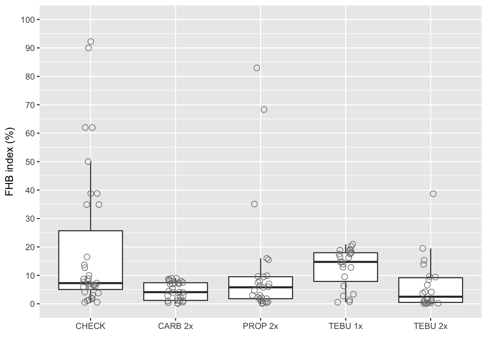
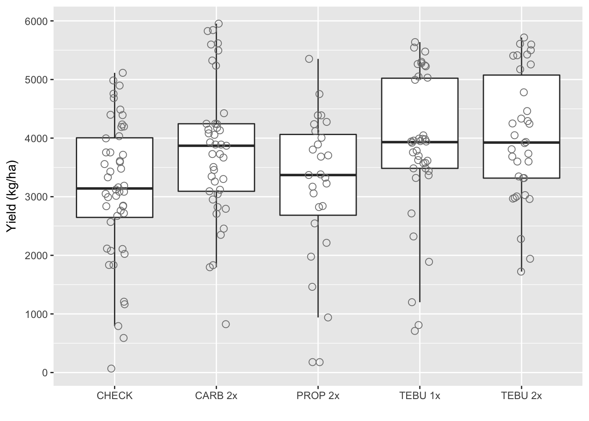
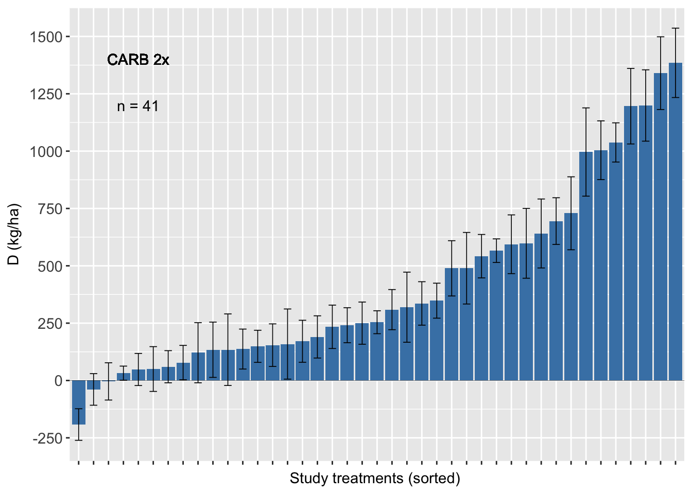
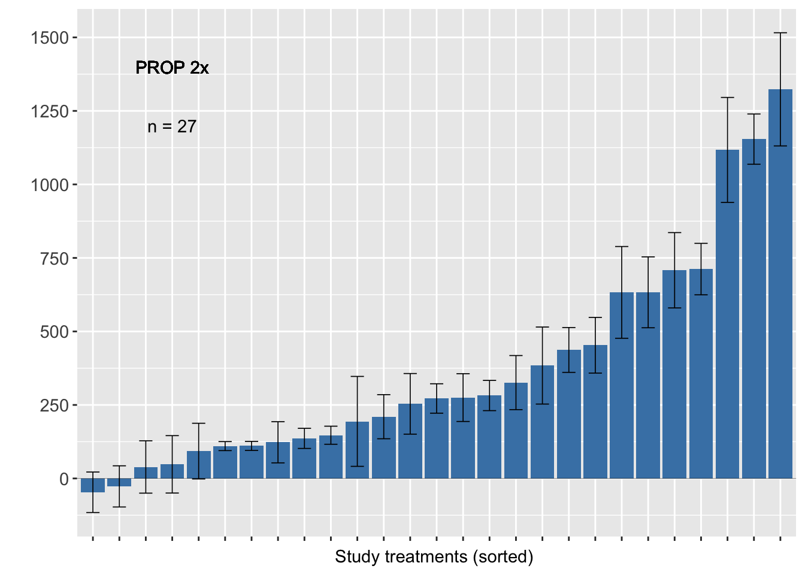
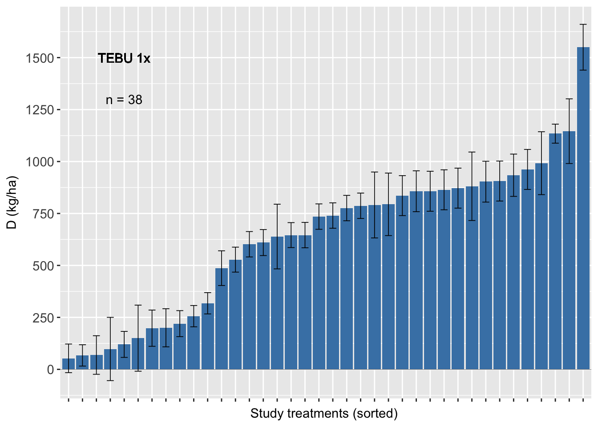

Plots
The plots below were presented in the article.
Boxplot FHB index
ggplot(fhb_sev, aes(AI_nspray2, sev))+
geom_boxplot(size = 0.5, outlier.shape = NA)+
geom_jitter(width=0.1, shape=1, size=2.5, color="gray50")+
scale_x_discrete(labels=c("CHECK","CARB 2x", "PROP 2x" ,"TEBU 1x","TEBU 2x")) +
theme_grey()+
xlab("")+
ylab("FHB index (%)")+
scale_y_continuous(breaks=c(0, 10, 20, 30, 40, 50, 60, 70, 80, 90, 100), limits=c(0,100))
Boxplot yield
ggplot(fhb_yield, aes(AI_nspray2, yield))+
geom_boxplot(size = 0.5, outlier.shape = NA)+ geom_jitter(width=0.1, shape=1, size=2.5, color="gray50")+
scale_x_discrete(labels=c("CHECK","CARB 2x", "PROP 2x" ,"TEBU 1x","TEBU 2x")) +
theme_grey()+
xlab("")+
ylab("Yield (kg/ha)")+
scale_y_continuous(breaks=c(0, 1000, 2000, 3000, 4000, 5000, 6000))
Plot yield diff
library(plyr)
fhb_yield$se <- sqrt(fhb_yield$vi2/sqrt(fhb_yield$n))
sum<-ddply(.data=fhb_yield,
.(AI_nspray2),
summarize,
n=paste("n =", length(AI_nspray2)))
sum1<-sum %>% filter(AI_nspray2 != "AACHECK_0", AI_nspray2!="PROP_2",AI_nspray2 !="TEBU_1",AI_nspray2 !="TEBU_2")Carbendazim 2x
##### CARB ########
fhb_yield %>%
group_by(trial) %>%
filter(AI_nspray2 != "AACHECK_0", AI_nspray2!="PROP_2",AI_nspray2 !="TEBU_1",AI_nspray2 !="TEBU_2") %>% ggplot(., aes(reorder(treatment, D), D)) +
geom_bar(stat="identity", fill = "steelblue")+
geom_errorbar(width=0.5, size= 0.3, aes(ymax = D + se, ymin=D - se))+
geom_text(data=sum1, aes(x=5, y=1200,label=n), inherit.aes=FALSE, parse=FALSE)+
geom_text(aes(x=5, y=1400,label="CARB 2x"), inherit.aes=FALSE, parse=FALSE)+
geom_hline(aes(yintercept=0), size = 0.1)+
scale_y_continuous(breaks=c(-250,0, 250, 500, 750, 1000, 1250, 1500))+
ylab("D (kg/ha)")+ xlab("Study treatments (sorted) ") +
theme_grey()+
theme(axis.text = element_text(size=11),
axis.text.x=element_blank(),
legend.position="none")
Propiconazole 2x
######PROP######
sum2<-sum %>% filter(AI_nspray2 != "AACHECK_0", AI_nspray2!="CARB_2",AI_nspray2 !="TEBU_1",AI_nspray2 !="TEBU_2")
fhb_yield %>% group_by(trial) %>% filter (AI_nspray2 != "AACHECK_0", AI_nspray2!="CARB_2",AI_nspray2 !="TEBU_1",AI_nspray2 !="TEBU_2") %>%
ggplot(., aes(reorder(treatment, D), D)) +
geom_bar(stat = "identity", fill = "steelblue")+
geom_errorbar(width=0.5, size= 0.3, aes(ymax = D + se, ymin = D - se))+
geom_text(data=sum2, aes(x=4, y=1200,label=n), inherit.aes=FALSE, parse=FALSE)+
geom_text(aes(x=4, y=1400,label="PROP 2x"), inherit.aes=FALSE, parse=FALSE)+
geom_hline(aes(yintercept=0), size = 0.1)+
scale_y_continuous(breaks=c(-250,0, 250, 500, 750, 1000, 1250, 1500))+
ylab(" ")+ xlab("Study treatments (sorted) ") +
theme_grey()+
theme(axis.text = element_text(size=11),
axis.text.x=element_blank(),
legend.position="none")
Tebuconazole 2x
sum3 <- sum %>% filter(AI_nspray2 != "AACHECK_0",
AI_nspray2!="CARB_2",
AI_nspray2 !="PROP_2",
AI_nspray2 !="TEBU_2")
fhb_yield %>%
group_by(trial) %>%
filter (AI_nspray2 != "AACHECK_0", AI_nspray2!="CARB_2",AI_nspray2 !="PROP_2",AI_nspray2 !="TEBU_2") %>%
ggplot(., aes(reorder(treatment, D), D)) +
geom_bar(stat="identity", fill = "steelblue")+
geom_errorbar(width=0.5, size= 0.3, aes(ymax = D + se, ymin=D - se))+
geom_text(data=sum3, aes(x=5, y=1300,label=n), inherit.aes=FALSE, parse=FALSE)+
geom_text(aes(x=5, y=1500,label="TEBU 1x"), inherit.aes=FALSE, parse=FALSE)+
geom_hline(aes(yintercept=0), size = 0.1)+
scale_y_continuous(breaks=c(-250,0, 250, 500, 750, 1000, 1250, 1500))+
ylab("D (kg/ha)")+ xlab("Study treatments (sorted) ") +
labs(fill="Number of sprays" )+
theme_grey()+
theme(axis.text = element_text(size=11),
axis.text.x=element_blank(),
legend.position="top") 
Tebuconazole 2x
sum4<-sum %>% filter(AI_nspray2 != "AACHECK_0", AI_nspray2!="CARB_2",AI_nspray2 !="PROP_2",AI_nspray2 !="TEBU_1")
fhb_yield %>% group_by(trial) %>% filter (AI_nspray2 != "AACHECK_0", AI_nspray2!="CARB_2",AI_nspray2 !="PROP_2",AI_nspray2 !="TEBU_1") %>%
ggplot(., aes(reorder(treatment, D), D)) +
geom_bar(stat="identity", fill = "steelblue")+
geom_errorbar(width=0.5, size= 0.3, aes(ymax = D + se, ymin=D - se))+
geom_text(data=sum4, aes(x=5, y=1200,label=n), inherit.aes=FALSE, parse=FALSE)+
geom_text(aes(x=5, y=1400,label="TEBU 2x"), inherit.aes=FALSE, parse=FALSE)+
geom_hline(aes(yintercept=0), size = 0.1)+
scale_y_continuous(breaks=c(-250,0, 250, 500, 750, 1000, 1250, 1500))+
ylab(" ")+ xlab("Study treatments (sorted) ") +
labs(fill="Number of sprays" )+
theme_grey()+
theme(axis.text = element_text(size=11),
axis.text.x=element_blank(),
legend.position="top") 
Density plots
Let’s look at the density of D for each fungicide in the same plot using the geom_joy function of the new `ggjoy’ package.
library(ggjoy)
fhb_yield %>%
group_by(trial) %>%
ggplot(aes(D, AI_nspray2, fill = AI_nspray2)) +
geom_joy(fill = "steelblue")+
theme_joy()+
theme(legend.position = "none")+
labs(y = "Fungicides", x = "Absolute difference in yield (kg/ha)",
title = "Wheat yield gain from using fungicide ")